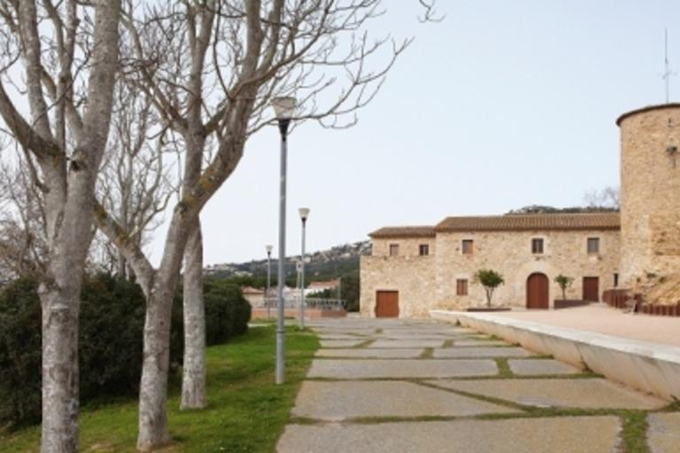

Visita · Platja d'Aro
La masia forma part dels habitatges que van anar estenent per la Vall d'Aro des de l'interior vers al mar, característica del paisatge local de segles passats, sobretot per les seves torres de…